0x00 导航
鉴于 AI 绘画的知识点较多，限于篇幅及便于分类组织，我会以一个系列文章的形式记录：
- 系列 01：《AI 绘画原理与工具》
- 系列 02：《AI 绘画模型扫盲》
- 系列 03：《AI 绘画模型推荐》
- 系列 04：《文生图：不会念咒的炼丹师不是一个好画家》
- 系列 05：《图生图：突破次元圈限制》
- 系列 06：《高清修复：轻松拥有 24K 钛合金画质》
- 系列 07：《提示词进阶：渐变|交替|混合》
- 系列 08：《LoRA 专题：五大应用场景》
- 系列 09：《LoRA 训练：不会炼丹的魔法师不是一个好画家》
- 系列 10：《ControlNet: 姿态控制》
- 系列 11：《ControlNet 进阶：打造炫酷的艺术字和二维码》
- 系列 12：《AI 动画初探：整个宇宙为你而闪烁》
你当前正在阅读的是系列 08《LoRA 专题：五大应用场景》
0x10 前言
LoRA 的全称为 Low-Rank Adaptation（低秩适应），是一种在机器学习中使用的方法，用于解决一些特殊问题，尤其是在数据中存在不均匀性的情况下表现较好。
要理解 LoRA，我们首先需要理解两个概念：低秩和适应。
- 低秩（Low Rank）：在数学中，秩（Rank）是一个描述矩阵信息量的概念。低秩意味着这个矩阵包含的信息比较少。在机器学习中，我们常常使用低秩的方法来简化问题，因为包含的信息少，计算就更快，更容易处理。
- 适应（Adaptation）：适应是指模型可以根据新的数据自我调整，使得模型在新的数据上表现得更好。这对于处理那些数据分布可能会变化的问题非常有用。
那么，LoRA 是怎么工作的呢？
LoRA 的思想是，对于复杂的问题，我们可以找到一个简单的（低秩的）模型作为基础，然后根据我们手头的数据对这个模型进行微调（适应）。这样，我们就可以用一个简单的模型来解决复杂的问题，同时还能保证在新的数据上表现得很好。
我们可以把这个过程比喻成学习骑自行车。起初，你可能会先学习一个简单的模型，比如如何平衡，如何踩踏板等。然后，当你在不同的路面（比如沙地、石头路、上坡、下坡等）上骑车时，你需要对你的骑车方式进行调整，这就像是对原始模型的适应。所以，虽然你开始时学的是一个简单的骑车模型，但是通过适应，你可以在各种各样的路面上骑车。这就是 LoRA 的思想。
在前面各个章节中都有对 LoRA 进行穿插说明，其核心作用就是固定特定人物角色特征，在图生图里面也介绍了简单的应用场景，但 LoRA 的用途远不止于此。
由于前面知识分布比较散乱，所以这期算是汇总 + 延申，毕竟 LoRA 作为最重要、最常用的模型之一，绝对值得为它开一个专题。
0x20 插件安装
其实 SD 原生就是集成 LoRA 的，通过提示词就可以直接引用，不过建议在「扩展」里面装一下 可选附加网络(LoRA插件)，可以更直观去使用它：
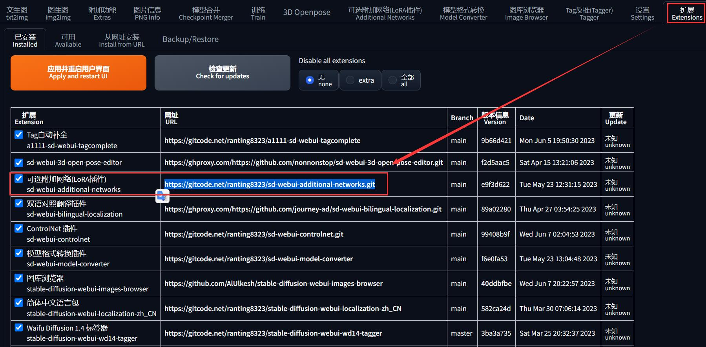
0x30 模型安装
在 C 站 找到喜欢的 LoRA 模型后，下载到默认存储位置 ${NovelAI}/models/LoRA 就完成安装了（如果没有可以手动创建）。
但是刚刚安装的可选附加网络(LoRA插件)，它读取 LoRA 模型的位置是在 ${NovelAI}/extensions/sd-webui-additional-networks/models/lora，为了方便管理，建议在 SD WebUI 中将其设置到 ${NovelAI}/models/Lora：
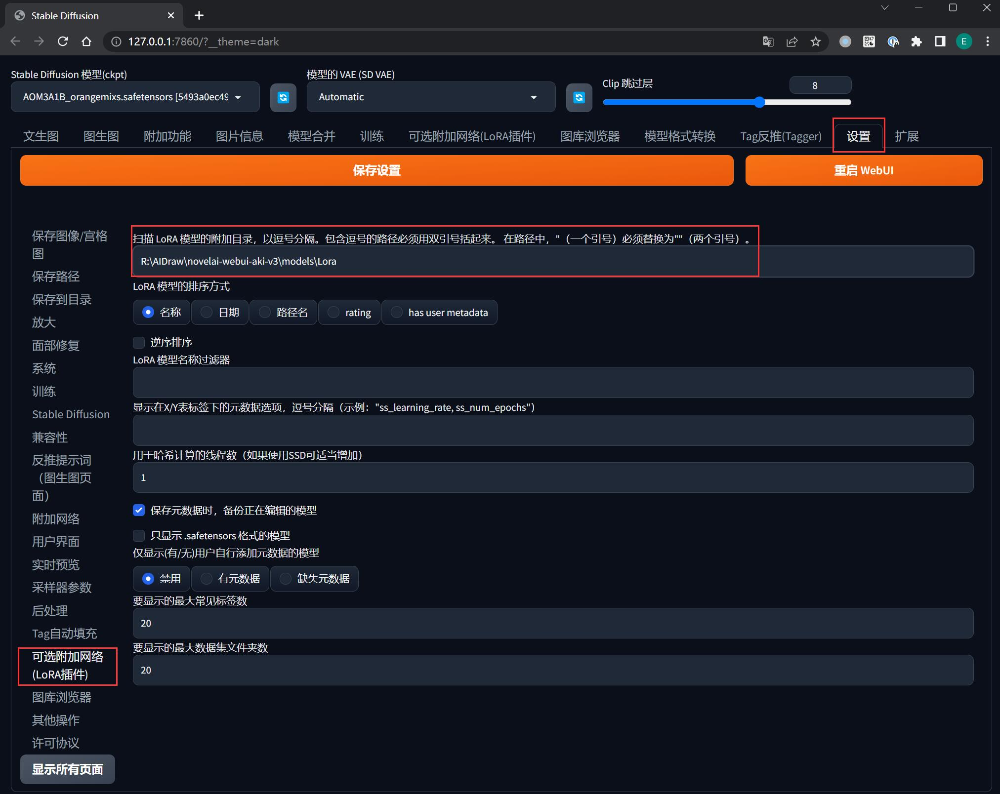
0x40 模型引用
0x41 方法一：提示词
- 在「生成」按钮的下方找到「附加网络」按钮，点击
- 在新显示的附加网络区块中，切换到「LoRA」标签
- 点击「刷新」按钮可以找到最新下载的模型
- 点击任意一个 LoRA 模型，会自动填写到格式形如
<lora:模型文件名称:权重>的 Prompt 到提示词输入框中：
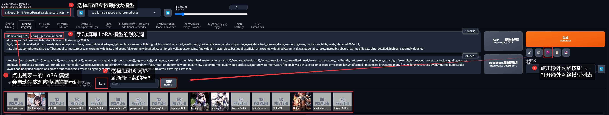
这种方法所生成的图片，其提示词会自动包含 LoRA 的配置，便于分享
如何管理 LoRA 模型？
当 LoRA 模型太多时，不好分辨，这时可以在「设置」「附加网络」里面修改 LoRA 的预览模式为 card （卡牌大图显示）：
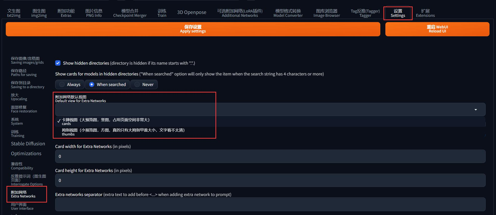
而且你可以为某个 LoRA 添加缩略图，最直接的方法是点击 LoRA 模型左下角的小按钮、选择当前生成的图片作为缩略图：
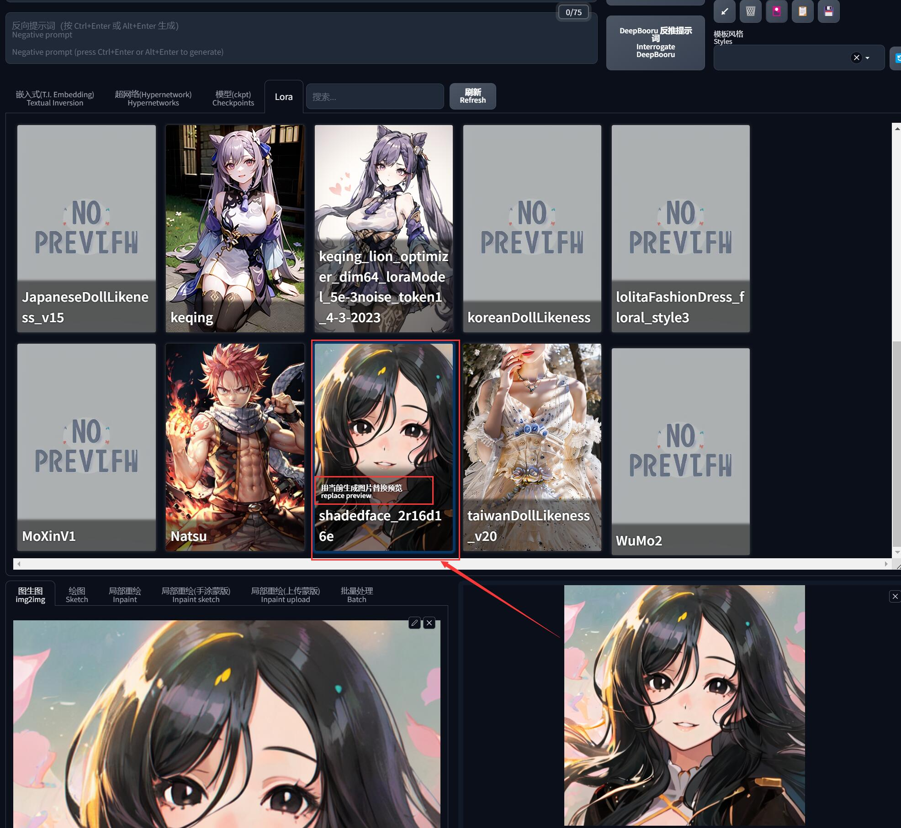
其次也可以到 LoRA 模型的目录中，添加一张和模型同名的 png/jpg 图片，SD-WebUI 会自动加载这张图片为缩略图：
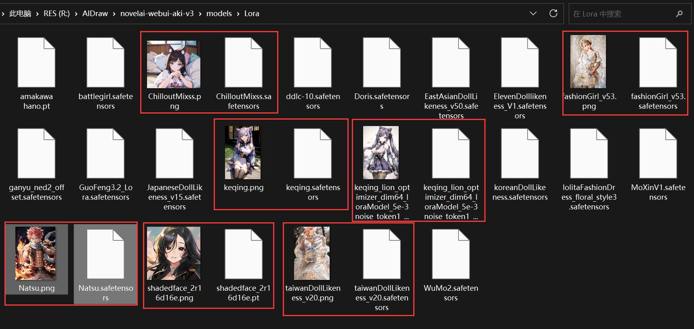
0x42 方法二：插件
前面安装的插件，会在出图参数区域的下方新增一个「可选附加网络(LoRA插件)」，展开后可以配置最多 5 个 LoRA 模型（记得必须勾选「启用」）：
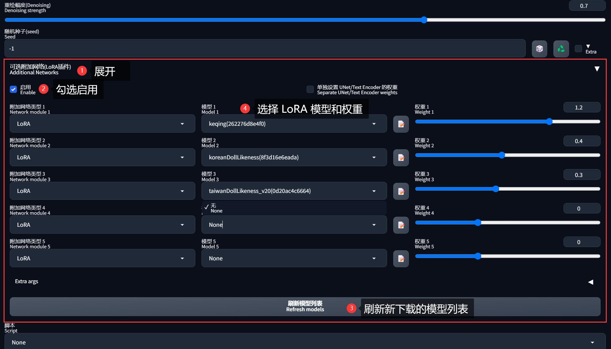
这种方法所生成的图片，其提示词不会包含 LoRA 的配置，这也是为什么有时抄别人提示词、却无法重现图像的原因之一
0x50 效果触发
单纯引入模型，很多时候并不会触发 LoRA 的效果，因为 LoRA 在训练时基本都会加入若干个特殊的触发词，所以使用时也需要在提示词中输入触发词才能激活 LoRA 的效果。
一般 LoRA 模型的介绍页，都会有注明触发词，例如 C 站一般会在右侧（也可能在下面的模型介绍中）：
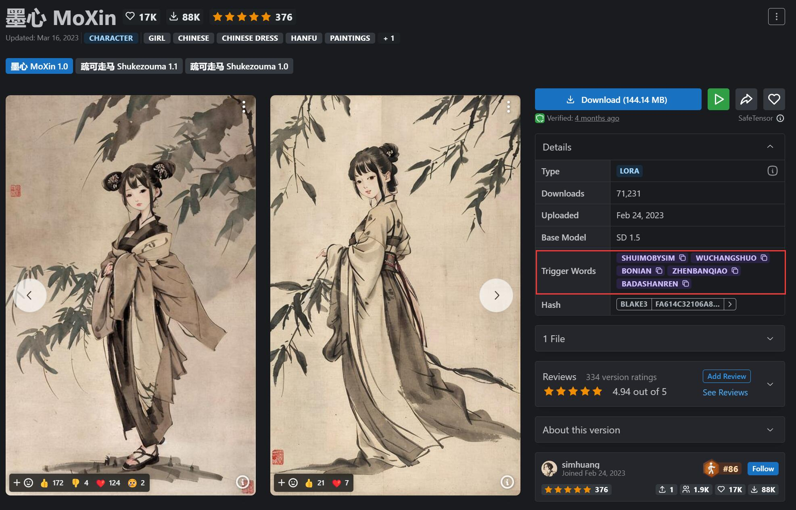
存在一些特殊的 LoRA 不需要触发词，只要引用模型就能生效
理论上引入的 LoRA 不限个数（只是插件限制了），但同时引入多个 LoRA 模型时，同类的 LoRA 尽量不要重复。
例如一个影响服饰、一个影响画风，它们之间是不会冲突的，还能起到很好的互补作用。但是如果 两个 LoRA 都是影响容貌的，就有可能冲突，这时可以适当调节它们之间的权重，以其中一个为主、另一个则稍微起到调味作用就可以了。
0x60 五大应用场景
0x61 描绘特定人物形象
这是 LoRA 最广的应用场景没有之一，在图生图里面的赛博 Coser 就是一个典型例子，另外还包括打造动画、漫画、游戏里面的角色等等也属于这个场景的应用范畴。
可以看看妖尾动漫中 Natsu 角色的图像，如果纯粹纯利用 Tagger 反推直接出图，无论描述多么细致，都没办法还原这个角色，但如果加入角色 LoRA <lora:Natsu:0.8>, natsu dragneel 就像了许多（或者说有了灵魂）：
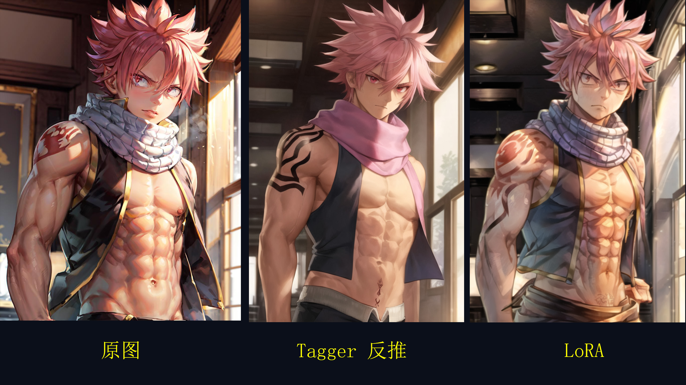
究其原因，是因为这个 LoRA 本身就是用很多个 Natsu 的图片作为素材训练出来的，AI 记住了他身上的关键特征。
例如 “妖尾工会纹身”，没受训的 AI 根本不知道什么是 “妖尾工会”，但 LoRA 会告诉它，这个纹身是长什么样的。
同时我们可以固定随机种子，然后直接切换一个真实系模型（如 ChilloutMix），使用同一个 LoRA 生成一个赛博 Coser :
大部分 LoRA 为了确保泛用性，训练使用的底模都是 SD 大模型，所以一般情况下 LoRA 不挑模型，尤其是参考图上没有标注模型信息的 LoRA，放心切换大模型就好
不过丑了一些，怎么修正外貌使其符合我们的审美呢？
其实除了这些针对 “某一个人” 的 LoRA 之外，还有针对 “某一类人” 的 LoRA 模型 —— 不局限于某一个人、而是实现了一个大方向的整体美化，例如：
- Fashion Girl： 使用时尚女性照片训练的模型
- Cute Girl： 使用可爱女性照片训练的模型
- AsianMale： 使用亚洲型男面孔训练的模型
现在追加一个 AsianMale 的 LoRA，权重不需要设置太高（免得喧宾夺主）：<lora:Lora-Custom-ModelLiXian:0.3>, 1man，现在看起来是不是帅气多了呢：
0x62 描绘特定画风
LoRA 模型的第二大应用是利用它实现画风、或者视觉风格的微调。虽然我们在第二节提到过 Embeddings 是专门用于优化画风的，但自从在画风表现方面毫不逊色的 Lora 诞生以来，它就坐了冷板凳。它对应 C 站的 Model 分类为 Style ：
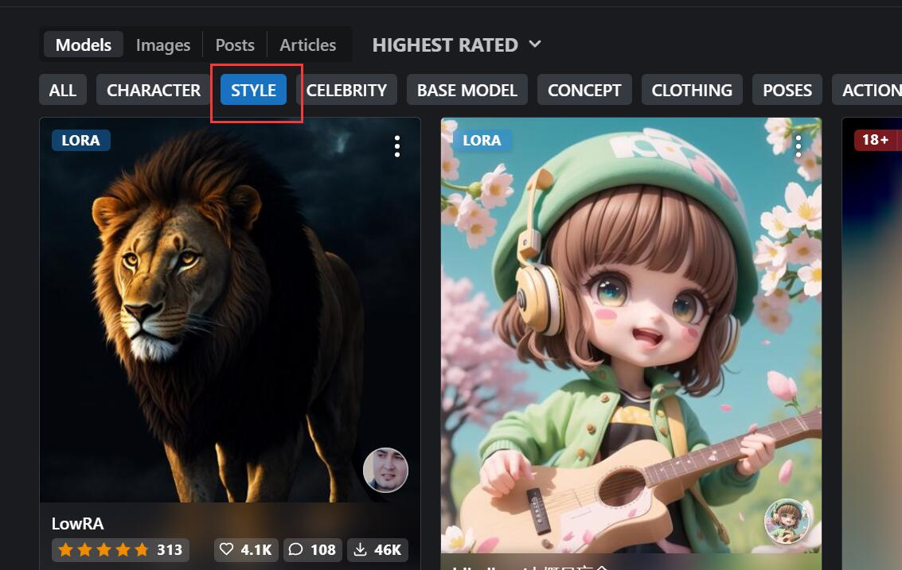
其中目前最受欢迎的是这个盲盒风的 LoRA blindbox：
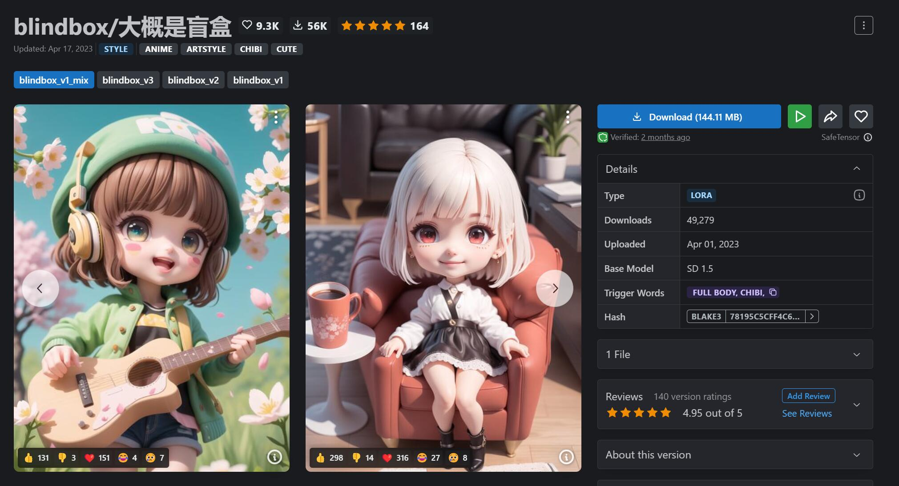
现在追加这个 LoRA ：<lora:blindbox_v1_mix:1.3>, full body, chibi， 再次重画 Natsu，整体效果就很有 PVC 手办的感觉：
0x63 描绘特定概念
LoRA 模型的第三大应用场景是“概念”，它类似画风但又比画风更抽象、只可意会不可言传，举个实际例子就明白了。
它对应 C 站的 Model 分类为 Concept，其中有一个非常受欢迎的 LoRA Gacha splash：
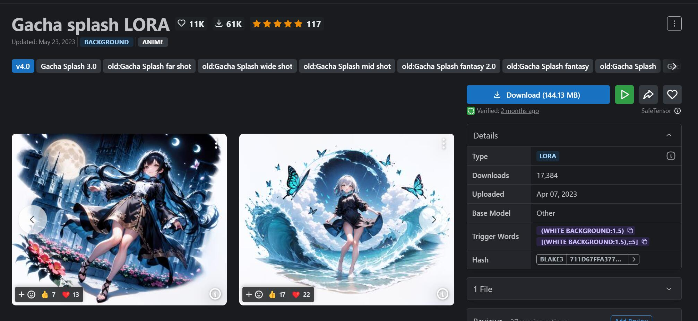
Gacha 泛指在后手游时代中各类氪金手游里的那个抽卡动作 —— 大部分二次元游戏在抽取角色的时候，都会蹦出一个非常酷炫的角色立绘，这个 LoRA 就是用了大量那种类似的立绘作为素材训练出来的。
现在追加这个 LoRA ：<lora:lihui4JXK-b2-bf16-128-128-1-re1-ep3-768-DA-5015fix:1.3>, [(white background:1.5),::5]。同时注意到作者建议尺寸为 640x640，应该是为了有空间绘制背景，所以我修改了宽高为正方形。再次重画 Natsu，虽然手画坏了一点，但整体霸气侧漏，确实有抽到传说的 feel：
其他常用的概念 LoRA 还有 Tarot Card（塔罗牌）、Stasis Pod（培养皿）、mugshot（档案照）等。
0x64 穿着特定服饰
许多常规的服饰不需要 LoRA 也能在 SD 里画出来，这是因为基础模型里记载了这些常规服饰的大概形象。
但假如你想要做一些更独特、更与众不同的服饰呢？
例如我希望给 Natsu 装备机甲（机甲又称为 Mecha），现在追加 C 站里比较热门的 A-Mecha Musume LoRA： <lora:A-RandomSuper[mecha musume,mechanical parts,super robot joints,headgear,full armor]:1>，因为它有多个触发词对应不同的机甲覆盖程度，我们可以按需添加：
mecha musume: 机甲少女mechanical parts: 机械零件super robot joints: 超级机器人关节full armor: 全装甲
一个 Cyberpunk Natsu 就诞生了：
如果想进一步强化机甲的特质，完全可以结合多个 Mecha LoRA 一起使用，如 Gundam RX78-2 。
不过像这种服饰类的 LoRA ，除非作者特别说明，否则权重不要太高，因为它们在训练清洗样本时，为了排除干扰，一般都会把衣服之外的部分裁掉。如果权重太高，很容易会出现只有衣服而没有人的情况 —— 譬如一只完整的高达：
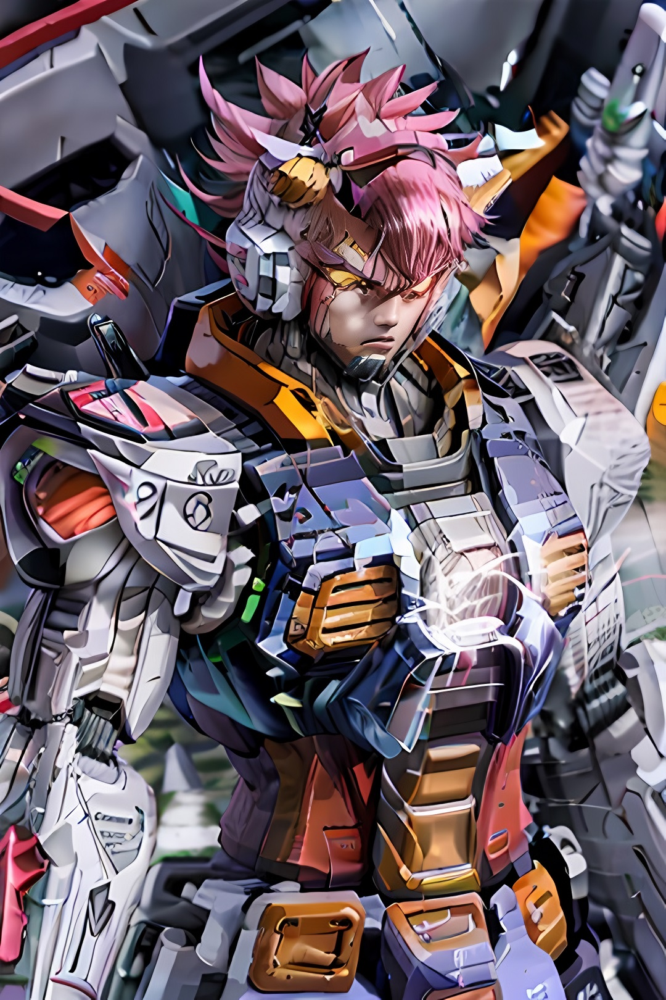
关于服饰类的 LoRA 还有很多，诸如像 hanfu（汉服）、Lolita（洛丽塔）、JK 等著名的三坑服装，可以凭自己喜好去尝试。
0x65 添加特定元素
有时候我们只需要在个别部位添加范围较小的特殊元素，应该怎么做呢？
一个典型就是 Cyberhelmet（赛博头盔），这是专门针对未来感十足的科技头盔所训练的 LoRA。
可以单独利用它为前面的 Cyberpunk Natsu 戴上一个头盔，操作过程如下：
- 局部重绘，在头部地方涂上蒙版
- 选择「仅蒙版」的重绘模式
- 只保留头盔的 LoRA 和提示词
<lora:cyberhelmetv0.7:0.7>, cyberhelmet, a red cyberhelmet, head, close-up
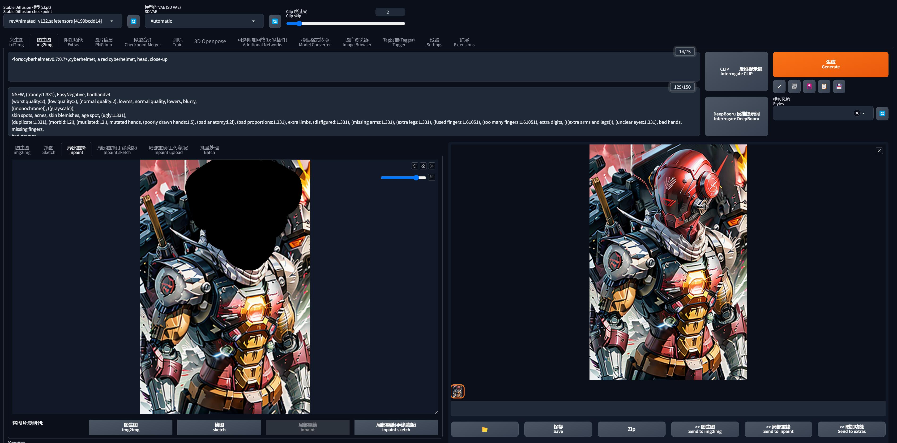
点击生成 … 欢迎来到魔法与机甲的世界，你还能认出来这是 Natsu 吗？
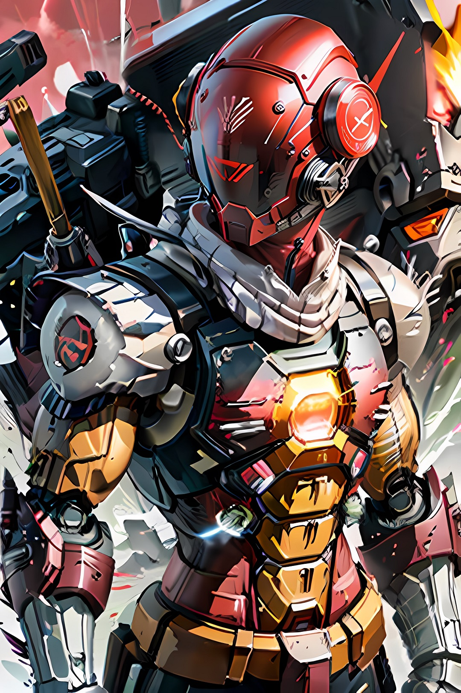
特定元素其实算是服饰类的延伸，只不过它更小、更专